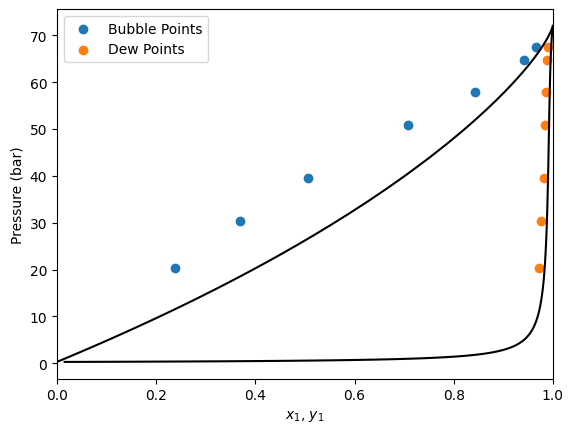
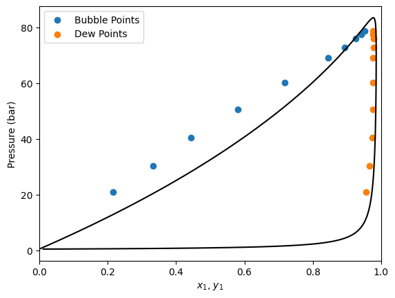
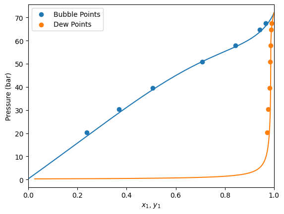
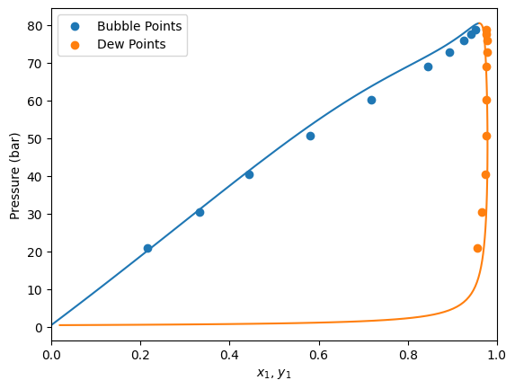
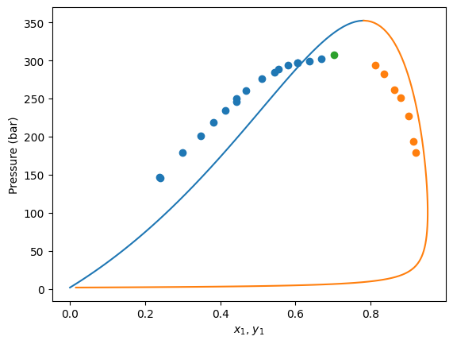
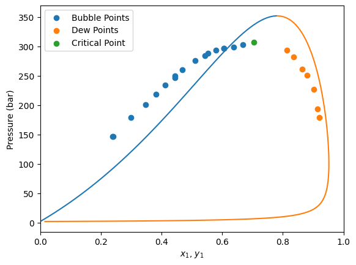
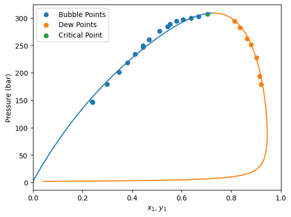

Fitting interaction parameters of binary systems
Sometimes Equations of State needs an extra help to better predict behaviors.
Let’s see how we can optimize binary interaction parameters (BIPs) of a Cubic Equation, using equilibrium data.
Data structure
For all the default approaches of parameter optimization the data points must be in the format of a pandas DataFrame, with the following columns:
kind: Which kind of point is defined. The options are:bubbleTbubblePdewTdewPPTliquid-liquidcritical
T: Temperature (in Kelvin).P: Pressure (in bar).x1: Mole fraction of component 1 (lightest component) in heavy phase.y1: Mole fraction of component 1 (lightest component) in light phase.
Optional column:
weight: A column that assign a weight factor to that data point when calculating the error. If not provided, all weights are assumed as 1.
Depending on the specified data point kind the experimental error will be calculated differently. Moreover, different information will be needed. “Not used” information could be set as NaN (missing data) in the dataframe
|
Description |
Not Used |
|---|---|---|
|
A saturation temperature calculation is performed using The error is calculated between the calculated saturation temperature and |
|
|
A saturation pressure calculation is performed using The error is calculated between the calculated saturation pressure and |
|
|
A saturation temperature calculation is performed using The error is calculated between the calculated saturation temperature and |
|
|
A saturation pressure calculation is performed using The error is calculated between the calculated saturation pressure and |
|
|
A flash calculation is performed at The error is calculated between the calculated light phase composition and and between the calculated heavy phase composition and You must provide |
— |
|
Same as |
— |
|
The critical line is calculated. Since is a critical point both The error is calculated between the calculated pressure, temperature and composition and |
|
As shown, depending on the kind of each data point, some information is mandatory and other is not used. This behaviour allows the user to adjust the same data points to different kinds and enhance the fitting results.
In the following cell we import the data points from a .csv file
[1]:
import pandas as pd
import numpy as np
df = pd.read_csv('./data/CO2_C6.csv')
df
[1]:
| kind | T | P | x1 | y1 | |
|---|---|---|---|---|---|
| 0 | bubbleP | 303.15 | 20.24 | 0.2385 | 0.9721 |
| 1 | bubbleP | 303.15 | 30.36 | 0.3698 | 0.9768 |
| 2 | bubbleP | 303.15 | 39.55 | 0.5063 | 0.9815 |
| 3 | bubbleP | 303.15 | 50.95 | 0.7078 | 0.9842 |
| 4 | bubbleP | 303.15 | 57.83 | 0.8430 | 0.9855 |
| 5 | bubbleP | 303.15 | 64.68 | 0.9410 | 0.9884 |
| 6 | bubbleP | 303.15 | 67.46 | 0.9656 | 0.9909 |
| 7 | bubbleP | 315.15 | 20.84 | 0.2168 | 0.9560 |
| 8 | bubbleP | 315.15 | 30.40 | 0.3322 | 0.9660 |
| 9 | bubbleP | 315.15 | 40.52 | 0.4446 | 0.9748 |
| 10 | bubbleP | 315.15 | 50.66 | 0.5809 | 0.9753 |
| 11 | bubbleP | 315.15 | 60.29 | 0.7180 | 0.9753 |
| 12 | bubbleP | 315.15 | 69.11 | 0.8457 | 0.9764 |
| 13 | bubbleP | 315.15 | 72.89 | 0.8928 | 0.9773 |
| 14 | bubbleP | 315.15 | 75.94 | 0.9252 | 0.9777 |
| 15 | bubbleP | 315.15 | 77.50 | 0.9424 | 0.9768 |
| 16 | bubbleP | 315.15 | 78.66 | 0.9520 | 0.9756 |
This data set consist of multiple bubble pressure data points at two different temperatures. Both liquid (x1) and vapor (y1) light component mole compositions are provided.
As explained before, depending on the kind of data point, some columns are not used. In this case, since we are going to use bubbleP kind, the y1 column is not used, even if it is still provided in the data set.
Since the weight column is not provided, all data points will be equally weighted when calculating the error.
Default model prediction
Before starting to fit BIPs, let’s see how the model predicts without BIPs.
First, let’s define the model
[2]:
import yaeos
Tc = [304.1, 504.0] # Critical temperature in K
Pc = [73.75, 30.12] # Critical pressure in bar
w = [0.4, 0.299] # Acentric factor
# Peng-Robinson (1976) model without interaction parameters
model = yaeos.PengRobinson76(Tc, Pc, w)
Calculation of Pxy diagrams
Now that the model is defined, lets calculate Pxy diagrams for each temperature.
First, we find the unique values of temperature to iterate over them later.
[3]:
Ts = df["T"].unique()
Ts
[3]:
array([303.15, 315.15])
[4]:
import matplotlib.pyplot as plt
gpec = yaeos.GPEC(model)
for T in Ts:
msk = df["T"] == T
pxy = gpec.plot_pxy(T, color="black")
plt.scatter(df[msk]["x1"], df[msk]["P"], label="Bubble Points")
plt.scatter(df[msk]["y1"], df[msk]["P"], label="Dew Points")
plt.xlim(0, 1)
plt.legend()
plt.show()


Here we can see that the PengRobinson EoS present a negative deviation with respect to the experimental points. Let’s se how we can improve these predictions.
Definition of the optimization problem
Now that we already have our data points defined. We need to define the optimization problem.
The yaeos.fitting package includes the BinaryFitter object, this object encapsulates all the logic that is needed to fit binary systems.
[5]:
import yaeos
from yaeos.fitting import BinaryFitter
help(BinaryFitter)
Help on class BinaryFitter in module yaeos.fitting.core:
class BinaryFitter(builtins.object)
| BinaryFitter(
| model_setter: Callable,
| model_setter_args: tuple,
| data: pandas.core.frame.DataFrame,
| verbose: bool = False,
| pressure_error: Callable = None,
| temperature_error: Callable = None,
| composition_error: Callable = None
| ) -> None
|
| BinaryFitter class.
|
| This class is used to fit binary interaction parameters to experimental
| data. The objective function is defined as the sum of the squared errors
| between the experimental data and the model predictions.
|
| Parameters
| ----------
| model_setter : Callable
| A function that returns a model object. The function should take the
| optimization parameters as the first argument and any other arguments
| as the following arguments.
| model_setter_args : tuple
| A tuple with the arguments to pass to the model_setter function.
| data : pandas.DataFrame
| A DataFrame with the experimental data.
| The DataFrame should have the following columns:
| - kind: str, the kind of data point (bubble, dew, liquid-liquid, PT,
| critical)
| - x1: float, the mole fraction of component 1 (lightest component) in
| heavy phase.
| - y1: float, the mole fraction of component 1 (lightest component) in
| light phase.
| - T: float, the temperature in K
| - P: float, the pressure in bar
| - weight: float, optional, the weight of the data point (default is 1)
| verbose : bool, optional
| If True, print the objective function value and the optimization
| pressure_error : Callable, optional
| A function `f(Pexp, Pmodel)`that calculates the pressure error between
| the experimental and model values.
| The function should take the experimental and model
| values as arguments and return the error. If None, the default function
| is used.
| temperature_error : Callable, optional
| A function `f(Texp, Tmodel)`that calculates the temperature error
| between the experimental and model values.
| The function should take the experimental and model
| values as arguments and return the error. If None, the default function
| is used.
| composition_error : Callable, optional
| A function `f(zexp, zmodel)`that calculates the composition error
| between the experimental and model values. The function should take
| the experimental and model for mixture composition as arguments and
| return the error. If None, the default function is used.
|
| Attributes
| ----------
| get_model : Callable
| The function that returns the model object from the optimization
| parameters and the model_setter_args.
| get_model_args : tuple
| The arguments to pass to the model_setter function.
| data : pandas.DataFrame
| The experimental data.
| evaluations : dict
| A dictionary with the evaluations of the objective function. The keys
| are 'fobj', and 'x'. 'fobj' is the objective function value,
| 'x' is the optimization parameters.
|
| Methods defined here:
|
| __init__(
| self,
| model_setter: Callable,
| model_setter_args: tuple,
| data: pandas.core.frame.DataFrame,
| verbose: bool = False,
| pressure_error: Callable = None,
| temperature_error: Callable = None,
| composition_error: Callable = None
| ) -> None
| Initialize self. See help(type(self)) for accurate signature.
|
| fit(self, x0, bounds=None, method='Nelder-Mead', optimizer_options=None)
| Fit the model to the data.
|
| Fit the model to the data using the objective function defined in
| the objective_function method. The optimization is performed using
| the scipy.optimize.minimize function.
| The optimization result is stored in the `.solution` property. Which
|
| Parameters
| ----------
| x0 : array-like
| Initial guess for the fitting parameters.
| bounds : array-like
| Bounds for the fitting parameters.
| method : str, optional
| The optimization method to use. Default is 'Nelder-Mead'.
|
| Returns
| -------
| None
|
| objective_function(self, x_values) -> float
| Objective function to minimize when fitting interaction parameters.
|
| Parameters
| ----------
| x_values : array-like
| The interaction parameters to fit, 1D array-like.
|
| Returns
| -------
| float
| The value of the objective function, which is the sum of the
| squared relative errors between the experimental data and the model
| predictions.
|
| ----------------------------------------------------------------------
| Readonly properties defined here:
|
| model
| Return the model with the fitted parameters.
|
| solution
| Return the optimization solution.
|
| ----------------------------------------------------------------------
| Data descriptors defined here:
|
| __dict__
| dictionary for instance variables
|
| __weakref__
| list of weak references to the object
Model setter function
Looking at the object’s documentation we can see that we need to define a function model_setter.
This is a user-defined function that sets and returns the Equation of State in function of the fitting parameters and extra required arguments.
The model_setter signature is as follows:
def model_setter(parameters_to_fit, *args) -> yaeos.core.ArModel:
"""
Function to set the Equation of State model.
Parameters
----------
parameters_to_fit : array_like
Array that contains the parameters to fit.
*args : tuple
Extra arguments required by the model.
Returns
-------
yaeos.core.ArModel
The Equation of State model with the specified parameters.
"""
# Code that sets an Equation of State model.
The extra arguments of the model_setter are passed to the BinaryFitter object when it is initialized. Let’s see an example to fit the \(k_{ij}\) values of the quadratic mixing rule (QMR) for the Peng-Robinson (1976) EoS.
[6]:
def fit_kij(x, Tcs, Pcs, ws):
"""Fit kij function of QMR.
Parameters
----------
x : array_like
List of interaction parameters (kij) to fit.
Tcs : array_like
Critical temperatures of the components in K.
Pcs : array_like
Critical pressures of the components in bar.
ws : array_like
Acentric factors of the components.
"""
# Create the kij matrix from the argument
kij = x[0]
kij_matrix = [
[0, kij],
[kij, 0]
]
# lij matrix is null, we are only fitting kij.
lij = [
[0, 0],
[0, 0]
]
# Setting of the mixing rule
mixrule = yaeos.QMR(kij=kij_matrix, lij=lij)
# Create the Peng-Robinson (1976) model with the mixing rule
model = yaeos.PengRobinson76(Tcs, Pcs, ws, mixrule=mixrule)
# return the model
return model
With the model_setter function defined we can instantiate a BinaryFitter object. Let’s see how we can do that.
[7]:
# The parameters of the substances
Tc = [304.1, 504.0] # Critical temperature in K
Pc = [73.75, 30.12] # Critical pressure in bar
w = [0.4, 0.299] # Acentric factor
# Instantiate the BinaryFitter
problem = BinaryFitter(
model_setter=fit_kij, # model_setter function
model_setter_args=(Tc, Pc, w), # Extra arguments for the model_setter
data=df, # Data to fit
verbose=True # Print information during the fitting process
)
# Initial guess for the fitting parameters (kij)
x0 = [0.0]
# Call the fit method with the initial guess and fit the model
problem.fit(x0, bounds=None)
1 1.7427277505415613 [0.]
2 1.7367297562170219 [0.00025]
3 1.7307370070279757 [0.0005]
4 1.724749524359144 [0.00075]
5 1.7127904444575115 [0.00125]
6 1.7008526887828561 [0.00175]
7 1.6770418452848828 [0.00275]
8 1.6533183938127916 [0.00375]
9 1.6061393524838132 [0.00575]
10 1.559327110667044 [0.00775]
11 1.466850636237784 [0.01175]
12 1.3759871691006067 [0.01575]
13 1.1995171239389069 [0.02375]
14 1.0308070867724293 [0.03175]
15 0.720712550588943 [0.04775]
16 0.4549489017208965 [0.06375]
17 0.1629893787067825 [0.09575]
18 0.21973945390710206 [0.12775]
19 0.21973945390710206 [0.12775]
20 0.09748392400879796 [0.11175]
21 0.21973945390710206 [0.12775]
22 0.11792833339944278 [0.10375]
23 0.10555975931245845 [0.11975]
24 0.097806384418106 [0.11575]
25 0.10412405294278751 [0.10775]
26 0.09666848514043408 [0.11375]
27 0.097806384418106 [0.11575]
28 0.09685432239927533 [0.11275]
29 0.055998484514111685 [0.11475]
30 0.097806384418106 [0.11575]
31 0.097806384418106 [0.11575]
32 0.05537506389575081 [0.11425]
33 0.09666848514043408 [0.11375]
34 0.05567256622884725 [0.1145]
35 0.055105868816721054 [0.114]
36 0.09666848514043408 [0.11375]
37 0.09666848514043408 [0.11375]
38 0.055236934869225984 [0.114125]
39 0.05498185301289581 [0.113875]
40 0.09666848514043408 [0.11375]
41 0.09666848514043408 [0.11375]
42 0.05504298026608506 [0.1139375]
We can check the arguments of the fit method.
The first argument x0 is the initial guess for the fitting parameters.
The second argument, bounds, could be used to set the optimization bounds of the interaction parameters. Is defined as a tuple of two arrays, the first one contains the lower bounds and the second one contains the upper bounds for each parameter. To not specify bounds, set it to None.
The third argument, method, is used to select the optimization method. The default method is "Nelder-Mead". Check the scipy.optimize.minimize documentation for more information about the available methods.
[8]:
help(problem.fit)
Help on method fit in module yaeos.fitting.core:
fit(x0, bounds=None, method='Nelder-Mead', optimizer_options=None) method of yaeos.fitting.core.BinaryFitter instance
Fit the model to the data.
Fit the model to the data using the objective function defined in
the objective_function method. The optimization is performed using
the scipy.optimize.minimize function.
The optimization result is stored in the `.solution` property. Which
Parameters
----------
x0 : array-like
Initial guess for the fitting parameters.
bounds : array-like
Bounds for the fitting parameters.
method : str, optional
The optimization method to use. Default is 'Nelder-Mead'.
Returns
-------
None
Optimization result
Now that we have fitted the parameter, let’s check the solution. For this, we can access the solution attribute of problem.
As shown we can see that the optimization terminated successfully with a kij value of around 0.113
[9]:
problem.solution
[9]:
message: Optimization terminated successfully.
success: True
status: 0
fun: 0.05498185301289581
x: [ 1.139e-01]
nit: 21
nfev: 42
final_simplex: (array([[ 1.139e-01],
[ 1.139e-01]]), array([ 5.498e-02, 5.504e-02]))
Obtain the fitted model
Now that the problem has been optimized, let’s redefine our model with the solution.
For this, we use the get_model method inside the BinaryFitter object. This just uses the function that we have provided originally (fit_kij) to return the model with the specified parameters.
[10]:
# Obtain the fitted model specifying the solution of the fitting and the parameters of the substances
model = problem.get_model(problem.solution.x, Tc, Pc, w)
Make predictions
Let’s repeat the calculation of Pxy diagrams that we have done earlier
[11]:
import matplotlib.pyplot as plt
gpec = yaeos.GPEC(model)
for T in Ts:
msk = df["T"] == T
gpec.plot_pxy(T)
plt.scatter(df[msk]["x1"], df[msk]["P"], label="Bubble Points")
plt.scatter(df[msk]["y1"], df[msk]["P"], label="Dew Points")
plt.xlim(0, 1)
plt.legend()
plt.show()


Another example
Let’s check another example of fitting BIPs. First, we need to read the data.
[12]:
import pandas as pd
df = pd.read_csv("data/C1_benzene.csv")
# Temperature of the experimental data
T = 373
df
[12]:
| kind | T | P | x1 | y1 | weight | |
|---|---|---|---|---|---|---|
| 0 | bubbleP | 373 | 146.253230 | 0.240633 | NaN | NaN |
| 1 | bubbleP | 373 | 201.162791 | 0.348109 | NaN | NaN |
| 2 | bubbleP | 373 | 249.612403 | 0.443787 | NaN | NaN |
| 3 | bubbleP | 373 | 288.372093 | 0.553794 | NaN | NaN |
| 4 | bubbleP | 373 | 296.770026 | 0.606126 | NaN | NaN |
| 5 | bubbleP | 373 | 146.899225 | 0.238022 | NaN | NaN |
| 6 | bubbleP | 373 | 179.198966 | 0.299628 | NaN | NaN |
| 7 | bubbleP | 373 | 218.604651 | 0.380880 | NaN | NaN |
| 8 | bubbleP | 373 | 234.108527 | 0.412334 | NaN | NaN |
| 9 | bubbleP | 373 | 246.382429 | 0.443771 | NaN | NaN |
| 10 | bubbleP | 373 | 260.594315 | 0.468681 | NaN | NaN |
| 11 | bubbleP | 373 | 276.098191 | 0.510593 | NaN | NaN |
| 12 | bubbleP | 373 | 284.496124 | 0.543316 | NaN | NaN |
| 13 | bubbleP | 373 | 294.186047 | 0.579968 | NaN | NaN |
| 14 | bubbleP | 373 | 296.770026 | 0.606126 | NaN | NaN |
| 15 | bubbleP | 373 | 299.354005 | 0.637512 | NaN | NaN |
| 16 | bubbleP | 373 | 302.583979 | 0.667594 | NaN | NaN |
| 17 | dewP | 373 | 294.186047 | NaN | 0.812648 | NaN |
| 18 | dewP | 373 | 282.558140 | NaN | 0.834809 | NaN |
| 19 | dewP | 373 | 261.886305 | NaN | 0.863459 | NaN |
| 20 | dewP | 373 | 250.904393 | NaN | 0.880396 | NaN |
| 21 | dewP | 373 | 227.002584 | NaN | 0.901186 | NaN |
| 22 | dewP | 373 | 194.056848 | NaN | 0.914085 | NaN |
| 23 | dewP | 373 | 179.198966 | NaN | 0.920543 | NaN |
| 24 | critical | 373 | 307.104972 | 0.703413 | NaN | 25.0 |
Here we have a data set of bubble pressures and dew pressures all at 373 K. Moreover, the critical point is also provided at 373 K.
In this mixture of different data kind, the not used information is set as NaN (missing data) in the dataframe.
First, we are going to instantiate a Peng-Robinson EoS model without BIPs and see how it predicts the data.
[13]:
# Substance properties
Tc = [190.564, 562.05] # Critical temperatures in K
Pc = [45.99, 48.95] # Critical pressures in bar
w = [0.0115478, 0.2103] # Acentric factors
Zc = [0.286, 0.268] # Critical compressibility factors
model = yaeos.RKPR(Tc, Pc, w, Zc)
Now let’s plot the experimental data and the model predictions.
[14]:
import matplotlib.pyplot as plt
gpec = yaeos.GPEC(model)
pxy = gpec.plot_pxy(T)
msk_bub = df["kind"] == "bubbleP"
msk_dew = df["kind"] == "dewP"
msk_critical = df["kind"] == "critical"
plt.scatter(df[msk_bub]["x1"], df[msk_bub]["P"], label="Bubble Points")
plt.scatter(df[msk_dew]["y1"], df[msk_dew]["P"], label="Dew Points")
plt.scatter(df[msk_critical]["x1"], df[msk_critical]["P"], label="Critical Point")
[14]:
<matplotlib.collections.PathCollection at 0x7f0985de5090>

[15]:
def fit_kij(x, Tcs, Pcs, ws, Zc):
"""Fit kij function of QMR.
Parameters
----------
x : array_like
List of interaction parameters (kij) to fit.
Tcs : array_like
Critical temperatures of the components in K.
Pcs : array_like
Critical pressures of the components in bar.
ws : array_like
Acentric factors of the components.
"""
# Create the kij matrix from the argument
kij = x[0]
kij_matrix = [
[0, kij],
[kij, 0]
]
# lij matrix is null, we are only fitting kij.
lij = [
[0, 0],
[0, 0]
]
# Setting of the mixing rule
mixrule = yaeos.QMR(kij=kij_matrix, lij=lij)
# Create the Peng-Robinson (1976) model with the mixing rule
model = yaeos.RKPR(Tcs, Pcs, ws, Zc, mixrule=mixrule)
# return the model
return model
problem = BinaryFitter(
model_setter=fit_kij, # model_setter function
model_setter_args=(Tc, Pc, w, Zc), # Extra arguments for the model_setter
data=df, # Data to fit
verbose=True # Print information during the fitting process
)
[16]:
x0 = np.array([0.0])
problem.fit(x0=x0, bounds=None)
1 12.712990561193108 [0.]
2 12.765070436457856 [0.00025]
3 12.69796251561476 [-0.00025]
4 12.773953539764374 [-0.0005]
5 12.773953539764374 [-0.0005]
6 12.699162984207785 [-0.000125]
7 12.808109266746158 [-0.000375]
8 12.728853884379578 [-0.0001875]
9 12.728853884379578 [-0.0001875]
10 12.797586915552998 [-0.0003125]
11 12.818479424475159 [-0.00021875]
12 12.818479424475159 [-0.00021875]
13 12.76859724921738 [-0.00028125]
14 12.695824864038352 [-0.00026563]
15 12.76859724921738 [-0.00028125]
16 12.765230288065636 [-0.00025781]
17 12.765230288065636 [-0.00025781]
18 12.690788954865287 [-0.00027344]
19 12.76859724921738 [-0.00028125]
20 12.76859724921738 [-0.00028125]
21 12.747888887182642 [-0.00026953]
22 12.747888887182642 [-0.00026953]
23 12.694102734229123 [-0.00027734]
24 12.78077271503775 [-0.00027539]
25 12.691169642350369 [-0.00027148]
26 12.78077271503775 [-0.00027539]
27 12.801280533556714 [-0.00027246]
28 12.801280533556714 [-0.00027246]
29 12.836131434076941 [-0.00027441]
30 12.76141219808153 [-0.00027295]
31 12.699399169588892 [-0.00027393]
32 12.7657504864011 [-0.00027368]
33 12.737243232017534 [-0.00027319]
34 12.7657504864011 [-0.00027368]
35 12.760920931546497 [-0.00027332]
36 12.760920931546497 [-0.00027332]
37 12.730405509380505 [-0.00027356]
38 12.720684598495668 [-0.0002735]
39 12.800298863388038 [-0.00027338]
40 12.794082893712947 [-0.00027347]
41 12.794082893712947 [-0.00027347]
42 12.760989930286744 [-0.00027341]
43 12.743137924072204 [-0.00027342]
44 12.69089820047607 [-0.00027345]
45 12.777131911668056 [-0.00027345]
46 12.698152052298832 [-0.00027343]
47 12.777131911668056 [-0.00027345]
48 12.745732226119983 [-0.00027343]
49 12.745732226119983 [-0.00027343]
50 12.690600057699935 [-0.00027344]
51 12.777131911668056 [-0.00027345]
52 12.777131911668056 [-0.00027345]
53 12.725205247477902 [-0.00027344]
54 12.725205247477902 [-0.00027344]
55 12.812465912344248 [-0.00027344]
56 12.753596109412847 [-0.00027344]
57 12.753596109412847 [-0.00027344]
58 12.692788585457052 [-0.00027344]
59 12.751300192848976 [-0.00027344]
60 12.739609362490732 [-0.00027344]
61 12.751300192848976 [-0.00027344]
62 12.707271849183604 [-0.00027344]
63 12.80830596278925 [-0.00027344]
64 12.690257735974827 [-0.00027344]
65 12.707271849183604 [-0.00027344]
66 12.805248343011618 [-0.00027344]
67 12.805248343011618 [-0.00027344]
68 12.701466909166832 [-0.00027344]
69 12.698097260421914 [-0.00027344]
70 12.690146406924383 [-0.00027344]
71 12.805248343011618 [-0.00027344]
72 12.805248343011618 [-0.00027344]
73 12.737910964391496 [-0.00027344]
74 12.737910964391496 [-0.00027344]
75 12.914751317115273 [-0.00027344]
76 12.72811421916221 [-0.00027344]
77 12.700098529408315 [-0.00027344]
78 12.857052023891915 [-0.00027344]
79 12.690254170647679 [-0.00027344]
80 12.857052023891915 [-0.00027344]
81 12.692670887999373 [-0.00027344]
82 12.692670887999373 [-0.00027344]
83 12.776631390198318 [-0.00027344]
84 12.763032427405578 [-0.00027344]
85 12.763032427405578 [-0.00027344]
86 12.923669486723439 [-0.00027344]
87 12.718831574330343 [-0.00027344]
88 12.693554778681335 [-0.00027344]
89 12.875251465228132 [-0.00027344]
90 12.706307166110243 [-0.00027344]
91 12.875251465228132 [-0.00027344]
92 12.802262018701576 [-0.00027344]
93 12.802262018701576 [-0.00027344]
94 12.753086338471043 [-0.00027344]
95 12.80694879331762 [-0.00027344]
96 12.750606184216895 [-0.00027344]
97 12.80694879331762 [-0.00027344]
98 12.69072915677247 [-0.00027344]
99 12.71229112990472 [-0.00027344]
100 12.71367659421975 [-0.00027344]
101 12.71367659421975 [-0.00027344]
102 12.695645315463048 [-0.00027344]
103 12.695865288493367 [-0.00027344]
104 12.788223313427448 [-0.00027344]
105 12.695865288493367 [-0.00027344]
106 12.711289000980365 [-0.00027344]
107 12.69939416303577 [-0.00027344]
108 12.711289000980365 [-0.00027344]
109 12.735430441146868 [-0.00027344]
110 12.735430441146868 [-0.00027344]
111 12.79398504570799 [-0.00027344]
112 12.70527299626835 [-0.00027344]
113 12.73412444722904 [-0.00027344]
114 12.747707828428675 [-0.00027344]
115 12.747707828428675 [-0.00027344]
116 12.733638971273104 [-0.00027344]
117 12.848115451586505 [-0.00027344]
118 12.691745872178666 [-0.00027344]
119 12.848115451586505 [-0.00027344]
120 12.690146406924383 [-0.00027344]
[17]:
model = problem.get_model(problem.solution.x, Tc, Pc, w, Zc)
[18]:
import matplotlib.pyplot as plt
gpec = yaeos.GPEC(model)
pxy = gpec.plot_pxy(T)
msk_bub = df["kind"] == "bubbleP"
msk_dew = df["kind"] == "dewP"
msk_critical = df["kind"] == "critical"
plt.scatter(df[msk_bub]["x1"], df[msk_bub]["P"], label="Bubble Points")
plt.scatter(df[msk_dew]["y1"], df[msk_dew]["P"], label="Dew Points")
plt.scatter(df[msk_critical]["x1"], df[msk_critical]["P"], label="Critical Point")
plt.xlim(0, 1)
plt.legend()
plt.show()

[19]:
def fit_nrtl_hv(x, Tc, Pc, ws, Zc):
g12, g21 = x[:2]
alpha = x[2]
gji = [[0, g12], [g21, 0]]
alpha = [[0, alpha], [alpha, 0]]
use_kij = [[False, False], [False, False]]
kij = [[0, 0], [0, 0]]
mixrule = yaeos.HVNRTL(alpha=alpha, gji=gji, use_kij=use_kij, kij=kij)
model = yaeos.RKPR(Tc, Pc, ws, Zc, mixrule=mixrule)
return model
[20]:
Tc = [190.564, 562.05] # Critical temperatures in K
Pc = [45.99, 48.95] # Critical pressures in bar
w = [0.0115478, 0.2103] # Acentric factors
Zc = [0.286, 0.268] # Critical compressibility factors
problem = BinaryFitter(
model_setter=fit_nrtl_hv, # model_setter function
model_setter_args=(Tc, Pc, w, Zc), # Extra arguments for the model_setter
data=df, # Data to fit
verbose=True # Print information during the fitting process
)
[21]:
x0 = [31.81663237, 4.10864439, -1.3615617]
x0 = np.zeros(3)
problem.fit(x0=x0, bounds=None, method="Powell")
1 31.720739878409148 [0. 0. 0.]
2 31.720739878409148 [0. 0. 0.]
3 24.01666590269389 [1. 0. 0.]
4 22.853891348976568 [2.618034 0. 0. ]
5 23.340489903250674 [1.94368345 0. 0. ]
6 21.11100584435081 [5.23606803 0. 0. ]
7 11.63028521067565 [30.57593902 0. 0. ]
8 101.58883456783362 [71.57671185 0. 0. ]
9 18.472457255107443 [46.23684021 0. 0. ]
10 13.109048203322562 [20.89696986 0. 0. ]
11 11.623826005747967 [29.01914732 0. 0. ]
12 11.595737647949285 [29.69017271 0. 0. ]
13 11.58955040514113 [29.98707444 0. 0. ]
14 11.58955040514113 [29.98707444 0. 0. ]
15 11.840216191409839 [29.98707444 1. 0. ]
16 11.944850384445509 [29.98707444 -1.618034 0. ]
17 11.636554743766679 [29.98707444 -0.61803397 0. ]
18 11.71596520896982 [29.98707444 0.381966 0. ]
19 11.626695311392155 [29.98707444 -0.21558675 0. ]
20 11.656304736513261 [29.98707444 0.14589803 0. ]
21 11.601289364104298 [29.98707444 -0.08234681 0. ]
22 11.60930198870193 [29.98707444 0.05572809 0. ]
23 11.60002186774755 [ 2.99870744e+01 -2.13706298e-02 0.00000000e+00]
24 11.592588640404722 [2.99870744e+01 2.12862337e-02 0.00000000e+00]
25 11.594046833742294 [2.99870744e+01 5.83177616e-03 0.00000000e+00]
26 11.63407622275323 [ 2.99870744e+01 -8.16285400e-03 0.00000000e+00]
27 11.597909564501714 [ 2.99870744e+01 -3.11793269e-03 0.00000000e+00]
28 11.599353508195696 [2.99870744e+01 2.22754021e-03 0.00000000e+00]
29 11.597660456813067 [ 2.99870744e+01 -1.19094428e-03 0.00000000e+00]
30 11.628451524701383 [2.99870744e+01 8.50844624e-04 0.00000000e+00]
31 11.622350867566068 [ 2.99870744e+01 -4.54900222e-04 0.00000000e+00]
32 11.594827647840662 [2.99870744e+01 3.24993718e-04 0.00000000e+00]
33 11.587826630047964 [ 2.99870744e+01 -1.73756418e-04 0.00000000e+00]
34 11.587838487754743 [ 2.99870744e+01 -2.81143792e-04 0.00000000e+00]
35 11.589010835127215 [ 2.99870744e+01 -2.25902718e-04 0.00000000e+00]
36 11.587927787988313 [ 2.99870744e+01 -1.07387374e-04 0.00000000e+00]
37 11.589115011254462 [ 2.99870744e+01 -2.21581315e-04 0.00000000e+00]
38 11.624735142471671 [ 2.99870744e+01 -1.48405700e-04 0.00000000e+00]
39 11.596718552085918 [ 2.99870744e+01 -1.92023903e-04 0.00000000e+00]
40 11.594341559447479 [ 2.99870744e+01 -1.64073306e-04 0.00000000e+00]
41 11.677938410993061 [ 2.99870744e+01 -1.80733976e-04 0.00000000e+00]
42 11.611013858637637 [ 2.99870744e+01 -1.70057798e-04 0.00000000e+00]
43 11.619138857969858 [ 2.99870744e+01 -1.76421608e-04 0.00000000e+00]
44 11.629688055676798 [ 2.99870744e+01 -1.72018844e-04 0.00000000e+00]
45 11.587826630047964 [ 2.99870744e+01 -1.73756418e-04 0.00000000e+00]
46 17.465088802922867 [ 2.99870744e+01 -1.73756418e-04 1.00000000e+00]
47 9.364212853001815 [ 2.99870744e+01 -1.73756418e-04 -1.61803400e+00]
48 3.833192686668499 [ 2.99870744e+01 -1.73756418e-04 -1.20851600e+00]
49 4.321035611596756 [ 2.99870744e+01 -1.73756418e-04 -7.46903979e-01]
50 3.238143712603482 [ 2.99870744e+01 -1.73756418e-04 -1.03219590e+00]
51 3.221506647508738 [ 2.99870744e+01 -1.73756418e-04 -1.01172709e+00]
52 3.231365679720937 [ 2.99870744e+01 -1.73756418e-04 -9.90745886e-01]
53 3.240451032275605 [ 2.99870744e+01 -1.73756418e-04 -1.00160982e+00]
54 3.2101873169371378 [ 2.99870744e+01 -1.73756418e-04 -1.02184436e+00]
55 6.7241774475605e+82 [ 5.99741489e+01 -3.47512836e-04 -2.04368872e+00]
56 3.2101873169371378 [ 2.99870744e+01 -1.73756418e-04 -1.02184436e+00]
57 2.7002122700828077 [ 3.09870744e+01 -1.73756418e-04 -1.02184436e+00]
58 1.9681661548896228 [ 3.26051084e+01 -1.73756418e-04 -1.02184436e+00]
59 2.5931282074064166 [ 4.20877042e+01 -1.73756418e-04 -1.02184436e+00]
60 0.9836854175957981 [ 3.62271376e+01 -1.73756418e-04 -1.02184436e+00]
61 0.9662230305822197 [ 3.84656748e+01 -1.73756418e-04 -1.02184436e+00]
62 0.8921649570191204 [ 3.74329907e+01 -1.73756418e-04 -1.02184436e+00]
63 0.8921204773519108 [ 3.73585316e+01 -1.73756418e-04 -1.02184436e+00]
64 0.9169528821546234 [ 3.72848170e+01 -1.73756418e-04 -1.02184436e+00]
65 0.8921204773519108 [ 3.73585316e+01 -1.73756418e-04 -1.02184436e+00]
66 0.367153500188531 [37.35853156 0.99982624 -1.02184436]
67 1.236314155936818 [37.35853156 2.61786024 -1.02184436]
68 0.3996024056607871 [37.35853156 1.61786022 -1.02184436]
69 0.4916795701102231 [37.35853156 0.61786024 -1.02184436]
70 0.3417088177669865 [37.35853156 1.23948909 -1.02184436]
71 0.3641501325857214 [37.35853156 1.25188572 -1.02184436]
72 0.35645558257786575 [37.35853156 1.12663956 -1.02184436]
73 0.3569588944334672 [37.35853156 1.19638441 -1.02184436]
74 0.37683095094732544 [37.35853156 1.22302457 -1.02184436]
75 0.3417088177669865 [37.35853156 1.23948909 -1.02184436]
76 13.985438473218796 [ 3.73585316e+01 1.23948909e+00 -2.18443592e-02]
77 111.17946045931033 [37.35853156 1.23948909 -2.63987836]
78 38.23992673845981 [37.35853156 1.23948909 -1.63987833]
79 4.415636277294306 [37.35853156 1.23948909 -0.63987836]
80 0.7211423485412434 [37.35853156 1.23948909 -0.9049427 ]
81 0.347149113903413 [37.35853156 1.23948909 -1.02136795]
82 3.5485329847956906 [37.35853156 1.23948909 -1.25791232]
83 0.94458481757334 [37.35853156 1.23948909 -1.1120143 ]
84 0.5064617114497948 [37.35853156 1.23948909 -1.05628621]
85 0.44620606082277603 [37.35853156 1.23948909 -1.0339109 ]
86 0.352533140526955 [37.35853156 1.23948909 -1.0251728 ]
87 0.35506238725819744 [37.35853156 1.23948909 -1.02308689]
88 0.3514695159902317 [37.35853156 1.23948909 -1.02231896]
89 0.34786052919766014 [37.35853156 1.23948909 -1.02177592]
90 0.345927098318863 [37.35853156 1.23948909 -1.02202564]
91 0.3388488966657847 [37.35853156 1.23948909 -1.0219136 ]
92 0.37076105725688996 [37.35853156 1.23948909 -1.02191481]
93 0.3398162347821714 [37.35853156 1.23948909 -1.02191291]
94 10.32714539977053 [44.72998869 2.47915194 -1.02198285]
95 0.3388488966657847 [37.35853156 1.23948909 -1.0219136 ]
96 0.48785953576942975 [38.35853156 1.23948909 -1.0219136 ]
97 0.42637565612703027 [35.74049756 1.23948909 -1.0219136 ]
98 0.3186203202128767 [36.74049759 1.23948909 -1.0219136 ]
99 0.3221170253104198 [36.35853158 1.23948909 -1.0219136 ]
100 0.31564197071897904 [36.65879582 1.23948909 -1.0219136 ]
101 0.3190914146592524 [36.57964901 1.23948909 -1.0219136 ]
102 0.3143806208167666 [36.66579317 1.23948909 -1.0219136 ]
103 0.3165997416521348 [36.69336363 1.23948909 -1.0219136 ]
104 0.31301397285763755 [36.67632415 1.23948909 -1.0219136 ]
105 0.31578962645541553 [36.68314623 1.23948909 -1.0219136 ]
106 0.31301397285763755 [36.67632415 1.23948909 -1.0219136 ]
107 0.7109207565119121 [36.67632415 2.23948909 -1.0219136 ]
108 1.291797117901727 [36.67632415 -0.37854491 -1.0219136 ]
109 0.5012833878628427 [36.67632415 0.62145512 -1.0219136 ]
110 0.3472507210358854 [36.67632415 1.62145509 -1.0219136 ]
111 0.3170627036602403 [36.67632415 1.31679947 -1.0219136 ]
112 0.38284034499725084 [36.67632415 1.06406203 -1.0219136 ]
113 0.31973126826079645 [36.67632415 1.17248192 -1.0219136 ]
114 0.3127332577547122 [36.67632415 1.25338337 -1.0219136 ]
115 0.32005022765799757 [36.67632415 1.2552634 -1.0219136 ]
116 0.33866133352203887 [36.67632415 1.25324443 -1.0219136 ]
117 0.3335110270669634 [36.67632415 1.25410148 -1.0219136 ]
118 0.3122503294510511 [36.67632415 1.25365766 -1.0219136 ]
119 0.31617964820563493 [36.67632415 1.25382718 -1.0219136 ]
120 0.3122503294510511 [36.67632415 1.25365766 -1.0219136 ]
121 13.64091554672368 [ 3.66763242e+01 1.25365766e+00 -2.19136030e-02]
122 136.53623670618043 [36.67632415 1.25365766 -2.6399476 ]
123 48.24882662471886 [36.67632415 1.25365766 -1.63994758]
124 4.469352023226584 [36.67632415 1.25365766 -0.6399476 ]
125 0.8639882676804339 [36.67632415 1.25365766 -0.89245616]
126 0.355301324637229 [36.67632415 1.25365766 -1.03844828]
127 0.32962607703760105 [36.67632415 1.25365766 -1.00249826]
128 0.3281543018096071 [36.67632415 1.25365766 -1.01680394]
129 0.32517616127084464 [36.67632415 1.25365766 -1.02822929]
130 0.3276514237174333 [36.67632415 1.25365766 -1.02280524]
131 0.36494448784227584 [36.67632415 1.25365766 -1.01996189]
132 0.3122672861161226 [36.67632415 1.25365766 -1.02116811]
133 0.3121815554481213 [36.67632415 1.25365766 -1.02157966]
134 0.3130366985347009 [36.67632415 1.25365766 -1.02156132]
135 0.33474691309280785 [36.67632415 1.25365766 -1.02170722]
136 0.3720834186379783 [36.67632415 1.25365766 -1.02162839]
137 0.3170616093952996 [36.67632415 1.25365766 -1.02159827]
138 0.31711858611545124 [36.67632415 1.25365766 -1.02158677]
139 0.3555244032930727 [36.67632415 1.25365766 -1.02157266]
140 0.3126182033253744 [36.67632415 1.25365766 -1.021583 ]
141 0.31413481417749883 [36.67632415 1.25365766 -1.02157633]
142 0.33843859090212036 [35.99411674 1.26782623 -1.02124573]
143 0.3121815554481213 [36.67632415 1.25365766 -1.02157966]
144 0.3720015804217315 [37.67632415 1.25365766 -1.02157966]
145 0.45795187147073946 [35.05829015 1.25365766 -1.02157966]
146 0.3353740096103193 [36.05829018 1.25365766 -1.02157966]
147 0.3481330556295275 [37.05829015 1.25365766 -1.02157966]
148 0.3510812273726937 [36.50983138 1.25365766 -1.02157966]
149 0.3620877887363281 [36.82222218 1.25365766 -1.02157966]
150 0.3215226727328461 [36.61272957 1.25365766 -1.02157966]
151 0.3251237096573723 [36.73205224 1.25365766 -1.02157966]
152 0.323596010667879 [36.66764174 1.25365766 -1.02157966]
153 0.3153423694811209 [36.69761039 1.25365766 -1.02157966]
154 0.31516256399634857 [36.68445477 1.25365766 -1.02157966]
155 0.3162955477137048 [36.67300776 1.25365766 -1.02157966]
156 0.31636706237007073 [36.67942977 1.25365766 -1.02157966]
157 0.37174972512022236 [36.6750574 1.25365766 -1.02157966]
158 0.3314449711303058 [36.67751039 1.25365766 -1.02157966]
159 0.31368098418794155 [36.6758403 1.25365766 -1.02157966]
160 0.37219221251041973 [36.67677726 1.25365766 -1.02157966]
161 0.31807577590606023 [36.67613934 1.25365766 -1.02157966]
162 0.3118902820665271 [36.67649722 1.25365766 -1.02157966]
163 0.33021900064256593 [36.67660419 1.25365766 -1.02157966]
164 0.4141390073034049 [36.67643111 1.25365766 -1.02157966]
165 0.3430540663310323 [36.67653808 1.25365766 -1.02157966]
166 0.3135978230452068 [36.67647197 1.25365766 -1.02157966]
167 0.3562386641499982 [36.67651283 1.25365766 -1.02157966]
168 0.31180183616738505 [36.67648758 1.25365766 -1.02157966]
169 0.34296172801238606 [36.67648162 1.25365766 -1.02157966]
170 0.32930354662594963 [36.67649126 1.25365766 -1.02157966]
171 0.31996495295142363 [36.6764853 1.25365766 -1.02157966]
172 0.3515866714656725 [36.67648921 1.25365766 -1.02157966]
173 0.31180183616738505 [36.67648758 1.25365766 -1.02157966]
174 0.6814828201830909 [36.67648758 2.25365766 -1.02157966]
175 1.2680169497389198 [36.67648758 -0.36437634 -1.02157966]
176 0.4880075158381416 [36.67648758 0.63562369 -1.02157966]
177 0.3939819407551044 [36.67648758 1.63562366 -1.02157966]
178 0.32850866372942195 [36.67648758 1.22960093 -1.02157966]
179 0.35625244816128415 [36.67648758 1.39662319 -1.02157966]
180 0.33544450774103113 [36.67648758 1.30826563 -1.02157966]
181 0.3176035807155638 [36.67648758 1.26585732 -1.02157966]
182 0.31271173315406336 [36.67648758 1.25238925 -1.02157966]
183 0.3137190356112206 [36.67648758 1.25707291 -1.02157966]
184 0.31654377938671685 [36.67648758 1.25496217 -1.02157966]
185 0.31946429593683756 [36.67648758 1.25433721 -1.02157966]
186 0.3122297145121833 [36.67648758 1.25317317 -1.02157966]
187 0.3356386823167008 [36.67648758 1.25391723 -1.02157966]
188 0.3118204147273705 [36.67648758 1.2534726 -1.02157966]
189 0.343175709645848 [36.67648758 1.25358433 -1.02157966]
190 0.3146010748982919 [36.67648758 1.25375681 -1.02157966]
191 0.33443781779193626 [36.67648758 1.25369553 -1.02157966]
192 0.3122007277645437 [36.67648758 1.25362965 -1.02157966]
193 0.3205930005365643 [36.67648758 1.25367213 -1.02157966]
194 0.3184571134045007 [36.67648758 1.25364696 -1.02157966]
195 0.3653543004839874 [36.67648758 1.25366319 -1.02157966]
196 0.3119288496165587 [36.67648758 1.25365357 -1.02157966]
197 0.31869157791851066 [36.67648758 1.25365977 -1.02157966]
198 0.31232249174945226 [36.67648758 1.2536561 -1.02157966]
199 0.3256015968672436 [36.67648758 1.25365847 -1.02157966]
200 0.3484129103596716 [36.67648758 1.25365707 -1.02157966]
201 0.33366961245675436 [36.67648758 1.25365797 -1.02157966]
202 0.32426189648494047 [36.67648758 1.25365743 -1.02157966]
203 0.3470487867731196 [36.67648758 1.25365778 -1.02157966]
204 0.3182961766937099 [36.67648758 1.25365757 -1.02157966]
205 0.312518497639956 [36.67648758 1.25365771 -1.02157966]
206 0.31382269724672057 [36.67648758 1.25365763 -1.02157966]
207 0.3475495663021329 [36.67648758 1.25365768 -1.02157966]
208 0.3347595248886961 [36.67648758 1.25365765 -1.02157966]
209 0.3163362000126386 [36.67648758 1.25365767 -1.02157966]
210 0.3137683134513189 [36.67648758 1.25365766 -1.02157966]
211 0.3146107567804401 [36.67648758 1.25365766 -1.02157966]
212 0.3118032570081523 [36.67648758 1.25365766 -1.02157966]
213 0.31323790743174607 [36.67648758 1.25365766 -1.02157966]
214 0.3763360041268404 [36.67648758 1.25365766 -1.02157966]
215 0.33749812334961987 [36.67648758 1.25365766 -1.02157966]
216 0.3118384425964663 [36.67648758 1.25365766 -1.02157966]
217 0.3128366840656848 [36.67648758 1.25365766 -1.02157966]
218 0.316530400239797 [36.67648758 1.25365766 -1.02157966]
219 0.3307804362143871 [36.67648758 1.25365766 -1.02157966]
220 0.31648278832719495 [36.67648758 1.25365766 -1.02157966]
221 0.33516435544759177 [36.67648758 1.25365766 -1.02157966]
222 0.31711142611668114 [36.67648758 1.25365766 -1.02157966]
223 0.3119561030703992 [36.67648758 1.25365766 -1.02157966]
224 0.31180183616738505 [36.67648758 1.25365766 -1.02157966]
225 13.652604992810225 [ 3.66764876e+01 1.25365766e+00 -2.15796649e-02]
226 136.61460343833272 [36.67648758 1.25365766 -2.63961366]
227 56.51778479445395 [36.67648758 1.25365766 -1.63961364]
228 4.395964347881826 [36.67648758 1.25365766 -0.63961366]
229 1.003621881105019 [36.67648758 1.25365766 -0.88319865]
230 0.40989940769674166 [36.67648758 1.25365766 -1.05934119]
231 0.3077458348128465 [36.67648758 1.25365766 -1.01034499]
232 0.31261531077564153 [36.67648758 1.25365766 -1.01200826]
233 0.41395185904111725 [36.67648758 1.25365766 -0.96177941]
234 0.3419483866364612 [36.67648758 1.25365766 -0.99179459]
235 0.3174945539370008 [36.67648758 1.25365766 -1.00325936]
236 0.31114797811102546 [36.67648758 1.25365766 -1.00763852]
237 0.30868233553560714 [36.67648758 1.25365766 -1.00931121]
238 0.326957793027666 [36.67648758 1.25365766 -1.0109803 ]
239 0.3550441401471853 [36.67648758 1.25365766 -1.00995012]
240 0.3300250195305945 [36.67648758 1.25365766 -1.01058765]
241 0.30773472301046245 [36.67648758 1.25365766 -1.01019416]
242 0.32363257851644184 [36.67648758 1.25365766 -1.0100803 ]
243 0.3142360820779925 [36.676651 1.25365766 -0.99880865]
244 0.30773472301046245 [36.67648758 1.25365766 -1.01019416]
245 0.35042847796543747 [37.67648758 1.25365766 -1.01019416]
246 0.47107699933766994 [35.05845358 1.25365766 -1.01019416]
247 0.3493161896578146 [36.0584536 1.25365766 -1.01019416]
248 0.31542226811095103 [37.05845358 1.25365766 -1.01019416]
249 0.32497354085241886 [36.75234036 1.25365766 -1.01019416]
250 0.31551141725328824 [36.44041961 1.25365766 -1.01019416]
251 0.30653935622869755 [36.75027653 1.25365766 -1.01019416]
252 0.3117676593971483 [36.72209166 1.25365766 -1.01019416]
253 0.3079376729369775 [36.73951087 1.25365766 -1.01019416]
254 0.3128871493161469 [36.74616442 1.25365766 -1.01019416]
255 0.32799148399301237 [36.74870584 1.25365766 -1.01019416]
256 0.308638440184263 [36.75106485 1.25365766 -1.01019416]
257 0.3175852025145272 [36.74953864 1.25365766 -1.01019416]
258 0.30653935622869755 [36.75027653 1.25365766 -1.01019416]
259 0.7871237281395974 [36.75027653 2.25365766 -1.01019416]
260 1.1588552433858408 [36.75027653 -0.36437634 -1.01019416]
261 0.45380314763860197 [36.75027653 0.63562369 -1.01019416]
262 0.382917613770523 [36.75027653 1.63562366 -1.01019416]
263 0.3076173584214958 [36.75027653 1.21649916 -1.01019416]
264 0.3280946583821134 [36.75027653 1.26163012 -1.01019416]
265 0.31326062273655814 [36.75027653 1.23531797 -1.01019416]
266 0.3190919637982109 [36.75027653 1.24665252 -1.01019416]
267 0.3194918720303862 [36.75027653 1.25670287 -1.01019416]
268 0.3327120515547438 [36.75027653 1.25098194 -1.01019416]
269 0.30805031322178456 [36.75027653 1.25482083 -1.01019416]
270 0.3074793939895072 [36.75027653 1.25263563 -1.01019416]
271 0.314496794928292 [36.75027653 1.25410195 -1.01019416]
272 0.34926547499037236 [36.75027653 1.25326728 -1.01019416]
273 0.31237683753459483 [36.75027653 1.25382736 -1.01019416]
274 0.311542025948472 [36.75027653 1.25350855 -1.01019416]
275 0.32336202861644625 [36.75027653 1.25372248 -1.01019416]
276 0.3158671695824774 [36.75027653 1.25360071 -1.01019416]
277 0.3457856554514194 [36.75027653 1.25368242 -1.01019416]
278 0.352447257600269 [36.75027653 1.25363591 -1.01019416]
279 0.31182489793501533 [36.75027653 1.25366712 -1.01019416]
280 0.3477191600870141 [36.75027653 1.25364935 -1.01019416]
281 0.33142911450607526 [36.75027653 1.25366127 -1.01019416]
282 0.32338559442122927 [36.75027653 1.25365449 -1.01019416]
283 0.30789549889099643 [36.75027653 1.25365904 -1.01019416]
284 0.3065442560428419 [36.75027653 1.25365645 -1.01019416]
285 0.32489578091594706 [36.75027653 1.25365819 -1.01019416]
286 0.3198740279063301 [36.75027653 1.2536572 -1.01019416]
287 0.30845290285356414 [36.75027653 1.25365786 -1.01019416]
288 0.3231403899005167 [36.75027653 1.25365748 -1.01019416]
289 0.3129550521931453 [36.75027653 1.25365774 -1.01019416]
290 0.3118498195456343 [36.75027653 1.25365759 -1.01019416]
291 0.30738927980511727 [36.75027653 1.25365769 -1.01019416]
292 0.3204424386342711 [36.75027653 1.25365764 -1.01019416]
293 0.30672133628579684 [36.75027653 1.25365767 -1.01019416]
294 0.30724633974171023 [36.75027653 1.25365765 -1.01019416]
295 0.31766845936053023 [36.75027653 1.25365767 -1.01019416]
296 0.31438041791968163 [36.75027653 1.25365766 -1.01019416]
297 0.30885834771927084 [36.75027653 1.25365766 -1.01019416]
298 0.3375394276619488 [36.75027653 1.25365766 -1.01019416]
299 0.30652699979008063 [36.75027653 1.25365766 -1.01019416]
300 0.3068710556839236 [36.75027653 1.25365766 -1.01019416]
301 0.35164460893511346 [36.75027653 1.25365766 -1.01019416]
302 0.3356893038146957 [36.75027653 1.25365766 -1.01019416]
303 0.32636099983879036 [36.75027653 1.25365766 -1.01019416]
304 0.33880777106801463 [36.75027653 1.25365766 -1.01019416]
305 0.3225138777422516 [36.75027653 1.25365766 -1.01019416]
306 0.30657467805153643 [36.75027653 1.25365766 -1.01019416]
307 0.3134067519442123 [36.75027653 1.25365766 -1.01019416]
308 0.30652699979008063 [36.75027653 1.25365766 -1.01019416]
309 13.79032707073366 [ 3.67502765e+01 1.25365766e+00 -1.01941599e-02]
310 135.69135051581213 [36.75027653 1.25365766 -2.62822816]
311 56.235360314205025 [36.75027653 1.25365766 -1.62822813]
312 4.566490397526468 [36.75027653 1.25365766 -0.62822816]
313 1.0469289264047206 [36.75027653 1.25365766 -0.874071 ]
314 0.4310107269140941 [36.75027653 1.25365766 -1.0591523 ]
315 0.3151346433594833 [36.75027653 1.25365766 -1.00519401]
316 0.309833975555977 [36.75027653 1.25365766 -1.01858587]
317 0.35938069508178816 [36.75027653 1.25365766 -1.01339951]
318 0.3073440055102309 [36.75027653 1.25365766 -1.01314272]
319 0.31207217614714616 [36.75027653 1.25365766 -1.00828427]
320 0.3140761226105761 [36.75027653 1.25365766 -1.01132041]
321 0.3162863956466452 [36.75027653 1.25365766 -1.00946465]
322 0.3107290439330707 [36.75027653 1.25365766 -1.01062435]
323 0.3065396650441793 [36.75027653 1.25365766 -1.00991551]
324 0.313741538076437 [36.75027653 1.25365766 -1.01028223]
325 0.37309323576259357 [36.75027653 1.25365766 -1.01008773]
326 0.3068725463027656 [36.75027653 1.25365766 -1.01015351]
327 0.3248086931787401 [36.75027653 1.25365766 -1.0102278 ]
328 0.31059895672575816 [36.75027653 1.25365766 -1.01017863]
329 0.3120787982416991 [36.75027653 1.25365766 -1.01020701]
330 0.30725520822762503 [36.75027653 1.25365766 -1.01018823]
331 0.3262727643951969 [36.75027653 1.25365766 -1.01019907]
332 0.32437041927914445 [36.75027653 1.25365766 -1.01019189]
333 0.3217007507389009 [36.75027653 1.25365766 -1.01019603]
334 0.3088801805932021 [36.75027653 1.25365766 -1.01019329]
335 0.3065500835255396 [36.75027653 1.25365766 -1.01019488]
336 0.34171087308852954 [36.75027653 1.25365766 -1.01019383]
337 0.31340025013837564 [36.75027653 1.25365766 -1.01019443]
338 0.32056133463079944 [36.75027653 1.25365766 -1.01019403]
339 0.3320868203625548 [36.75027653 1.25365766 -1.01019426]
340 0.33468865474427917 [36.75027653 1.25365766 -1.01019411]
341 0.33733981222575826 [36.75027653 1.25365766 -1.0101942 ]
342 0.3911143495625323 [36.75027653 1.25365766 -1.01019414]
343 0.3333532251198529 [36.75027653 1.25365766 -1.01019418]
344 0.31017498171518176 [36.75027653 1.25365766 -1.01019415]
345 0.33161674328083945 [36.75027653 1.25365766 -1.01019417]
346 0.32047118902913696 [36.75027653 1.25365766 -1.01019416]
347 0.3299470328280437 [36.75027653 1.25365766 -1.01019416]
348 0.3098950392130466 [36.75027653 1.25365766 -1.01019416]
349 0.3125761309624002 [36.75027653 1.25365766 -1.01019416]
350 0.30729571817626733 [36.75027653 1.25365766 -1.01019416]
351 0.3481276362037141 [36.75027653 1.25365766 -1.01019416]
352 0.3097971327888872 [36.75027653 1.25365766 -1.01019416]
353 0.30917272900058174 [36.75027653 1.25365766 -1.01019416]
354 0.3065668853260747 [36.75027653 1.25365766 -1.01019416]
355 0.3066435323484155 [36.75027653 1.25365766 -1.01019416]
356 0.3568920128222674 [36.75027653 1.25365766 -1.01019416]
357 0.31300478785170505 [36.75027653 1.25365766 -1.01019416]
358 0.3065298345300467 [36.75027653 1.25365766 -1.01019416]
359 0.34239040645686986 [36.82406549 1.25365766 -1.01019416]
360 0.30652699979008063 [36.75027653 1.25365766 -1.01019416]
361 0.38158268191324823 [37.75027653 1.25365766 -1.01019416]
362 0.4590384768871392 [35.13224253 1.25365766 -1.01019416]
363 0.3398629436777487 [36.13224256 1.25365766 -1.01019416]
364 0.31333336838202064 [37.13224253 1.25365766 -1.01019416]
365 0.30820986309690196 [36.81709703 1.25365766 -1.01019416]
366 0.32743393081253463 [36.51420857 1.25365766 -1.01019416]
367 0.31755265703067637 [36.6601066 1.25365766 -1.01019416]
368 0.3080165632199292 [36.71583468 1.25365766 -1.01019416]
369 0.31750588431513577 [36.76505354 1.25365766 -1.01019416]
370 0.3072578721663381 [36.73712092 1.25365766 -1.01019416]
371 0.3077688624473336 [36.75592085 1.25365766 -1.01019416]
372 0.3351974764598197 [36.74559375 1.25365766 -1.01019416]
373 0.3272078716338352 [36.75243247 1.25365766 -1.01019416]
374 0.3341389967124185 [36.74848787 1.25365766 -1.01019416]
375 0.3195147465960774 [36.75110003 1.25365766 -1.01019416]
376 0.31179203381351855 [36.74959332 1.25365766 -1.01019416]
377 0.31182293022118857 [36.75059108 1.25365766 -1.01019416]
378 0.30732880399516044 [36.75001557 1.25365766 -1.01019416]
379 0.3157691764729211 [36.75039668 1.25365766 -1.01019416]
380 0.3099888959056734 [36.75017685 1.25365766 -1.01019416]
381 0.3425529481947548 [36.75032242 1.25365766 -1.01019416]
382 0.3065281107683003 [36.75023846 1.25365766 -1.01019416]
383 0.3158565558858802 [36.75029406 1.25365766 -1.01019416]
384 0.318368670561562 [36.75026199 1.25365766 -1.01019416]
385 0.3141135186229642 [36.75028323 1.25365766 -1.01019416]
386 0.31961074850018245 [36.75027098 1.25365766 -1.01019416]
387 0.31204545648531534 [36.75027909 1.25365766 -1.01019416]
388 0.31098565832566427 [36.75027441 1.25365766 -1.01019416]
389 0.3279218214735346 [36.75027751 1.25365766 -1.01019416]
390 0.30832927668827464 [36.75027572 1.25365766 -1.01019416]
391 0.3589875414536576 [36.75027691 1.25365766 -1.01019416]
392 0.32742938537923527 [36.75027622 1.25365766 -1.01019416]
393 0.3376090792355063 [36.75027668 1.25365766 -1.01019416]
394 0.31479456470964884 [36.75027641 1.25365766 -1.01019416]
395 0.315255031361374 [36.75027659 1.25365766 -1.01019416]
396 0.3133541773995823 [36.75027649 1.25365766 -1.01019416]
397 0.33325006336861607 [36.75027655 1.25365766 -1.01019416]
398 0.30758887579578037 [36.75027652 1.25365766 -1.01019416]
399 0.34663346001855067 [36.75027654 1.25365766 -1.01019416]
400 0.32124728512949186 [36.75027653 1.25365766 -1.01019416]
401 0.30702270916853214 [36.75027654 1.25365766 -1.01019416]
402 0.32923699426347963 [36.75027653 1.25365766 -1.01019416]
403 0.334331320312223 [36.75027653 1.25365766 -1.01019416]
404 0.30714741314058736 [36.75027653 1.25365766 -1.01019416]
405 0.31092879574083954 [36.75027653 1.25365766 -1.01019416]
406 0.3074271934572778 [36.75027653 1.25365766 -1.01019416]
407 0.3150911950078914 [36.75027653 1.25365766 -1.01019416]
408 0.3466264120291042 [36.75027653 1.25365766 -1.01019416]
409 0.3096229425009653 [36.75027653 1.25365766 -1.01019416]
410 0.3154086095570514 [36.75027653 1.25365766 -1.01019416]
411 0.30883029876316814 [36.75027653 1.25365766 -1.01019416]
412 0.31238733804892616 [36.75027653 1.25365766 -1.01019416]
413 0.3343317552595005 [36.75027653 1.25365766 -1.01019416]
414 0.31380151881795265 [36.75027653 1.25365766 -1.01019416]
415 0.30652699979008063 [36.75027653 1.25365766 -1.01019416]
416 0.7744703322679566 [36.75027653 2.25365766 -1.01019416]
417 1.1498672649139332 [36.75027653 -0.36437634 -1.01019416]
418 0.5020592391057161 [36.75027653 0.63562369 -1.01019416]
419 0.37508681646413833 [36.75027653 1.63562366 -1.01019416]
420 0.3641012117057971 [36.75027653 1.26365369 -1.01019416]
421 0.36016589961664325 [36.75027653 1.0175897 -1.01019416]
422 0.31879086585963823 [36.75027653 1.14029303 -1.01019416]
423 0.30821069809707596 [36.75027653 1.25273153 -1.01019416]
424 0.31079362214423734 [36.75027653 1.2574758 -1.01019416]
425 0.3096302954417194 [36.75027653 1.25466372 -1.01019416]
426 0.3107733739845401 [36.75027653 1.25355284 -1.01019416]
427 0.3549439099934974 [36.75027653 1.25404194 -1.01019416]
428 0.3270886596188578 [36.75027653 1.25380444 -1.01019416]
429 0.32460054612403466 [36.75027653 1.25371373 -1.01019416]
430 0.3081862321231227 [36.75027653 1.25361763 -1.01019416]
431 0.33797242553660534 [36.75027653 1.25367908 -1.01019416]
432 0.34081267660945075 [36.75027653 1.25364237 -1.01019416]
433 0.3128974293167493 [36.75027653 1.25366584 -1.01019416]
434 0.3252214157142517 [36.75027653 1.25365182 -1.01019416]
435 0.31742502186733434 [36.75027653 1.25366079 -1.01019416]
436 0.3403800728824805 [36.75027653 1.25365543 -1.01019416]
437 0.34119176932136197 [36.75027653 1.25365886 -1.01019416]
438 0.31973645470420264 [36.75027653 1.25365681 -1.01019416]
439 0.3073761619423405 [36.75027653 1.25365812 -1.01019416]
440 0.31184533690099847 [36.75027653 1.25365734 -1.01019416]
441 0.3091801794120767 [36.75027653 1.25365784 -1.01019416]
442 0.355920275655309 [36.75027653 1.25365754 -1.01019416]
443 0.31072859687769744 [36.75027653 1.25365773 -1.01019416]
444 0.30797761706268095 [36.75027653 1.25365761 -1.01019416]
445 0.30690081475944486 [36.75027653 1.25365769 -1.01019416]
446 0.33137006256226753 [36.75027653 1.25365764 -1.01019416]
447 0.3528982888411731 [36.75027653 1.25365767 -1.01019416]
448 0.30813432671385266 [36.75027653 1.25365766 -1.01019416]
449 0.3324450392749083 [36.75027653 1.25365767 -1.01019416]
450 0.31593697125768516 [36.75027653 1.25365766 -1.01019416]
451 0.30814494516942703 [36.75027653 1.25365766 -1.01019416]
452 0.31374450446111213 [36.75027653 1.25365766 -1.01019416]
453 0.3196875958852648 [36.75027653 1.25365766 -1.01019416]
454 0.31271692672507895 [36.75027653 1.25365766 -1.01019416]
455 0.3115237644525133 [36.75027653 1.25365766 -1.01019416]
456 0.3107728368789175 [36.75027653 1.25365766 -1.01019416]
457 0.3207422818189752 [36.75027653 1.25365766 -1.01019416]
458 0.30692572603305346 [36.75027653 1.25365766 -1.01019416]
459 0.3065215169381843 [36.75027653 1.25365766 -1.01019416]
460 0.3065244620978038 [36.75027653 1.25365766 -1.01019416]
461 0.3200151380115537 [36.75027653 1.25365766 -1.01019416]
462 0.3065215169381843 [36.75027653 1.25365766 -1.01019416]
463 13.795512287529588 [ 3.67502765e+01 1.25365766e+00 -1.01941599e-02]
464 135.76087944402622 [36.75027653 1.25365766 -2.62822816]
465 56.26084109254036 [36.75027653 1.25365766 -1.62822813]
466 4.54431053905394 [36.75027653 1.25365766 -0.62822816]
467 1.0338849498669633 [36.75027653 1.25365766 -0.87379447]
468 0.4143159730296428 [36.75027653 1.25365766 -1.05562536]
469 0.30906282857055717 [36.75027653 1.25365766 -1.00491407]
470 0.34214321451674884 [36.75027653 1.25365766 -1.01183011]
471 0.3131024473969878 [36.75027653 1.25365766 -1.0076289 ]
472 0.3110040246033848 [36.75027653 1.25365766 -1.00921432]
473 0.30787218261329885 [36.75027653 1.25365766 -1.01081904]
474 0.30689135000110757 [36.75027653 1.25365766 -1.00981989]
475 0.3873220609937236 [36.75027653 1.25365766 -1.01016376]
476 0.3156519768959263 [36.75027653 1.25365766 -1.01043284]
477 0.32051510219444845 [36.75027653 1.25365766 -1.01028533]
478 0.30697357109385637 [36.75027653 1.25365766 -1.01022898]
479 0.3164089679491836 [36.75027653 1.25365766 -1.01020746]
480 0.3236709975940777 [36.75027653 1.25365766 -1.01018255]
481 0.3236514214351293 [36.75027653 1.25365766 -1.01019924]
482 0.3373443619140414 [36.75027653 1.25365766 -1.01018972]
483 0.31382025716644874 [36.75027653 1.25365766 -1.0101961 ]
484 0.3243815171406347 [36.75027653 1.25365766 -1.01019247]
485 0.3158705629420659 [36.75027653 1.25365766 -1.0101949 ]
486 0.3067198216095942 [36.75027653 1.25365766 -1.01019351]
487 0.3496298204386261 [36.75027653 1.25365766 -1.01019444]
488 0.3070445351952696 [36.75027653 1.25365766 -1.01019391]
489 0.3138323995391624 [36.75027653 1.25365766 -1.01019427]
490 0.32336019512881525 [36.75027653 1.25365766 -1.01019407]
491 0.30663996786491826 [36.75027653 1.25365766 -1.0101942 ]
492 0.3092590822188096 [36.75027653 1.25365766 -1.01019412]
493 0.3093201045895443 [36.75027653 1.25365766 -1.01019418]
494 0.3146153087475914 [36.75027653 1.25365766 -1.01019415]
495 0.33114332090875837 [36.75027653 1.25365766 -1.01019417]
496 0.3149038857999541 [36.75027653 1.25365766 -1.01019415]
497 0.38622628511518825 [36.75027653 1.25365766 -1.01019416]
498 0.3515304482966998 [36.75027653 1.25365766 -1.01019416]
499 0.30785868228465224 [36.75027653 1.25365766 -1.01019416]
500 0.33422197794714514 [36.75027653 1.25365766 -1.01019416]
501 0.308818376059696 [36.75027653 1.25365766 -1.01019416]
502 0.32823273408706394 [36.75027653 1.25365766 -1.01019416]
503 0.36980392659510114 [36.75027653 1.25365766 -1.01019416]
504 0.3138115879983291 [36.75027653 1.25365766 -1.01019416]
505 0.3066246552309642 [36.75027653 1.25365766 -1.01019416]
506 0.3716919116680728 [36.75027653 1.25365766 -1.01019416]
507 0.30885595960982337 [36.75027653 1.25365766 -1.01019416]
508 0.30660701830272347 [36.75027653 1.25365766 -1.01019416]
[22]:
problem.solution
[22]:
message: Optimization terminated successfully.
success: True
status: 0
fun: 0.3065215169381843
x: [ 3.675e+01 1.254e+00 -1.010e+00]
nit: 6
direc: [[ 1.000e+00 0.000e+00 0.000e+00]
[ 0.000e+00 1.000e+00 0.000e+00]
[ 0.000e+00 0.000e+00 1.000e+00]]
nfev: 508
[23]:
model = problem.get_model(problem.solution.x, Tc, Pc, w, Zc)
[24]:
import matplotlib.pyplot as plt
gpec = yaeos.GPEC(model)
pxy = gpec.plot_pxy(T)
msk_bub = df["kind"] == "bubbleP"
msk_dew = df["kind"] == "dewP"
msk_critical = df["kind"] == "critical"
plt.scatter(df[msk_bub]["x1"], df[msk_bub]["P"], label="Bubble Points")
plt.scatter(df[msk_dew]["y1"], df[msk_dew]["P"], label="Dew Points")
plt.scatter(df[msk_critical]["x1"], df[msk_critical]["P"], label="Critical Point")
plt.xlim(0, 1)
plt.legend()
plt.show()
